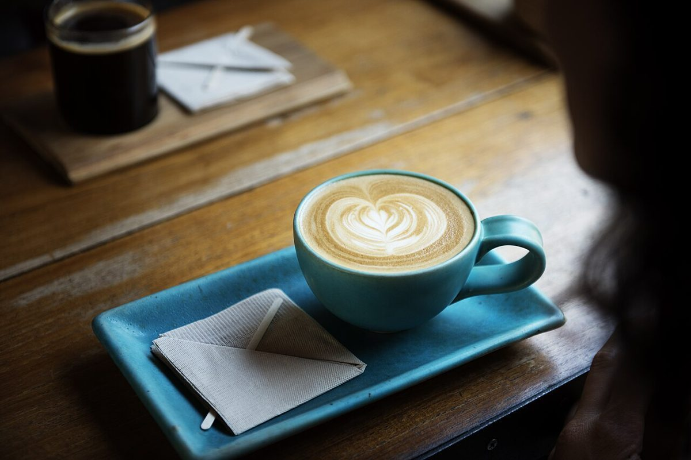
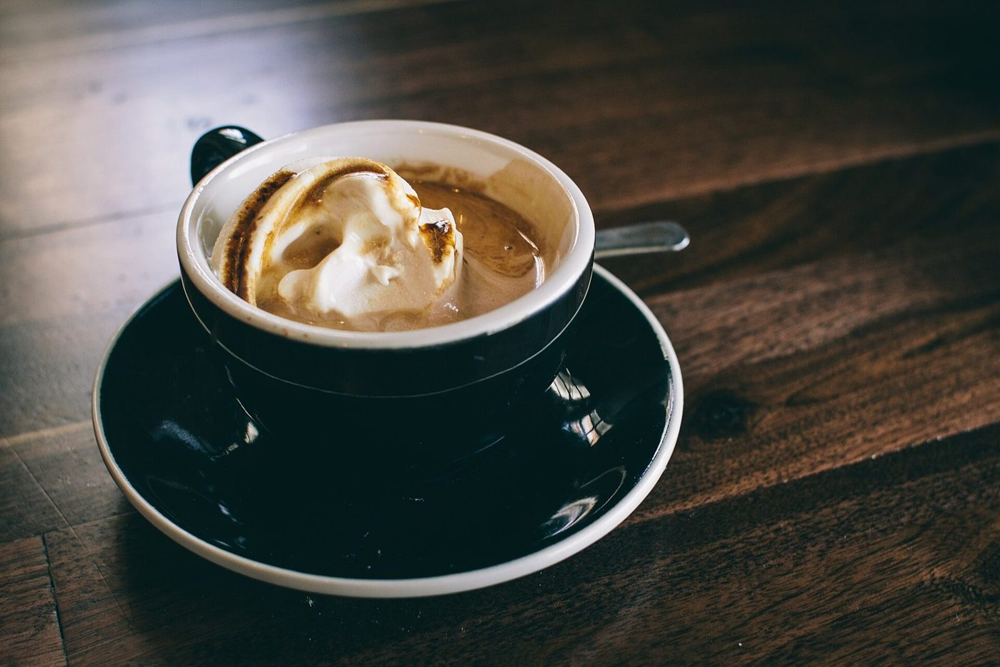

口コミ
口コミ(イメージ例)
以下は制作側が作った創作の文章で、実在のお客様の投稿ではありません。想像した声です。
想像した声
三つのイメージ例
イメージ例
Instagramをのぞいてみたいです。写真が載っていたら、ゆっくり眺めたい。
イメージ例
行ってみたい、と声に出してみる。営業時間のお知らせが出たら、それを楽しみに待ちたいです。
イメージ例
準備中の項目が埋まっていくのを、のぞきながら見守りたい。
制作側の創作です。実在のお客様の投稿ではありません。
写真(イメージ)
コーヒーの写真




写真はイメージです。お店のものではなく、お店で提供している商品や店内を示すものでもありません。